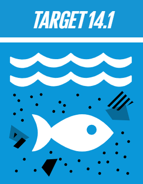
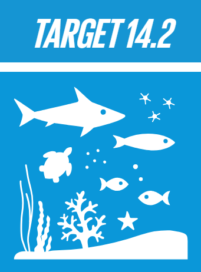
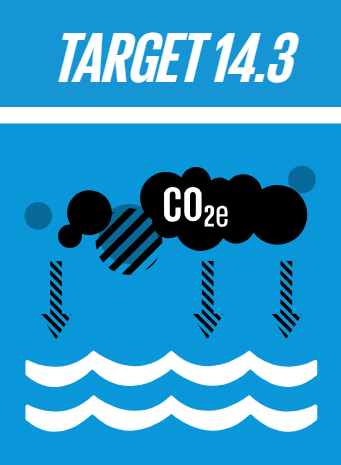
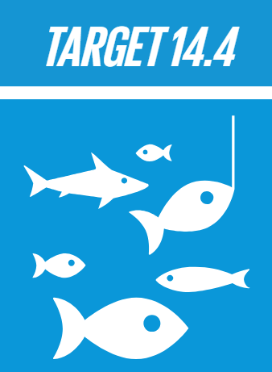
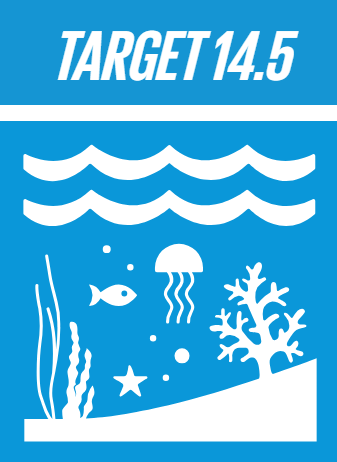
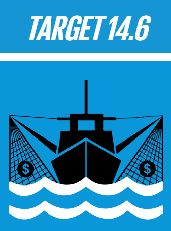
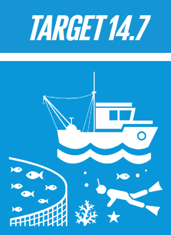
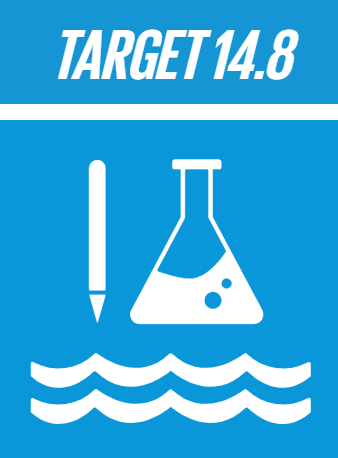
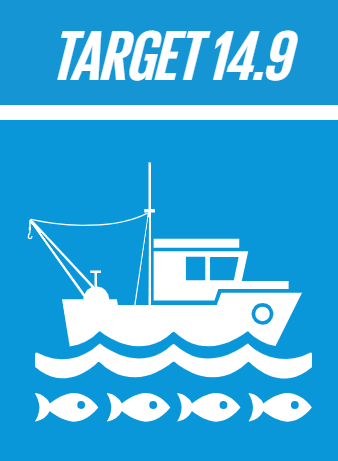
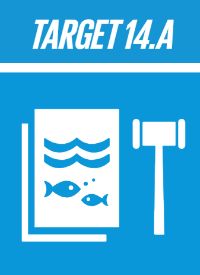

REDUCE MARINE POLLUTION
By 2025, prevent and significantly reduce marine pollution of all kinds, in particular from land-based activities, including marine debris and nutrient pollution.

PROTECT AND RESTORE ECOSYSTEMS
By 2020, sustainably manage and protect marine and coastal ecosystems to avoid significantbr adverse impacts, including by strengthening their resilience, and take action for their restoration in order to achieve healthy and productive oceans.

REDUCE OCEAN ACIDIFICATION
Minimize and address the impacts of ocean acidification, including through enhanced scientific cooperation at all levels.

SUSTAINABLE FISHING
By 2020, effectively regulate harvesting and end overfishing, illegal, unreported and unregulated fishing and destructive fishing practices and implement science-based management plans, in order to restore fish stocks in the shortest time feasible, at least to levels that can produce maximum sustainable yield as determined by their biological characteristics.

CONSERVE COASTAL AND MARINE AREAS
By 2020, conserve at least 10 per cent of coastal and marine areas, consistent with national and international law and based on the best available scientific information.

END SUBSIDIES CONTRIBUTING TO OVERFISHING
By 2020, prohibit certain forms of fisheries subsidies which contribute to overcapacity and overfishing, eliminate subsidies that contribute to illegal, unreported and unregulated fishing and refrain from introducing new such subsidies, recognizing that appropriate and effective special and differential treatment for developing and least developed countries should be an integral part of the World Trade Organization fisheries subsidies negotiation.

INCREASE THE ECONOMIC BENEFITS FROM SUSTAINABLE USE OF MARINE RESOURCES
By 2030, increase the economic benefits to small island developing States and least developed countries from the sustainable use of marine resources, including through sustainable management of fisheries, aquaculture and tourism.

INCREASE SCIENTIFIC KNOWLEDGE, RESEARCH AND TECHNOLOGY FOR OCEAN HEALTH
Increase scientific knowledge, develop research capacity and transfer marine technology, taking into account the Intergovernmental Oceanographic Commission Criteria and Guidelines on the Transfer of Marine Technology, in order to improve ocean health and to enhance the contribution of marine biodiversity to the development of developing countries, in particular small island developing States and least developed countries.

SUPPORT SMALL SCALE FISHERS
Provide access for small-scale artisanal fishers to marine resources and markets.

IMPLEMENT AND ENFORCE INTERNATIONAL SEA LAW
Enhance the conservation and sustainable use of oceans and their resources by implementing international law as reflected in the United Nations Convention on the Law of the Sea, which provides the legal framework for the conservation and sustainable use of oceans and their resources, as recalled in paragraph 158 of “The future we want”.